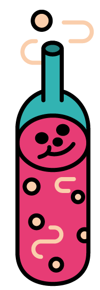
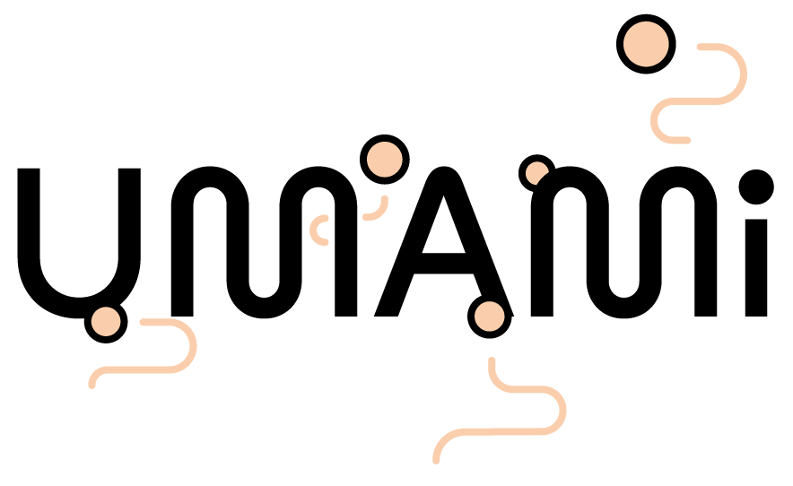
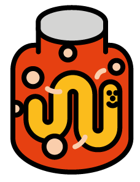
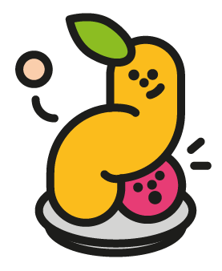
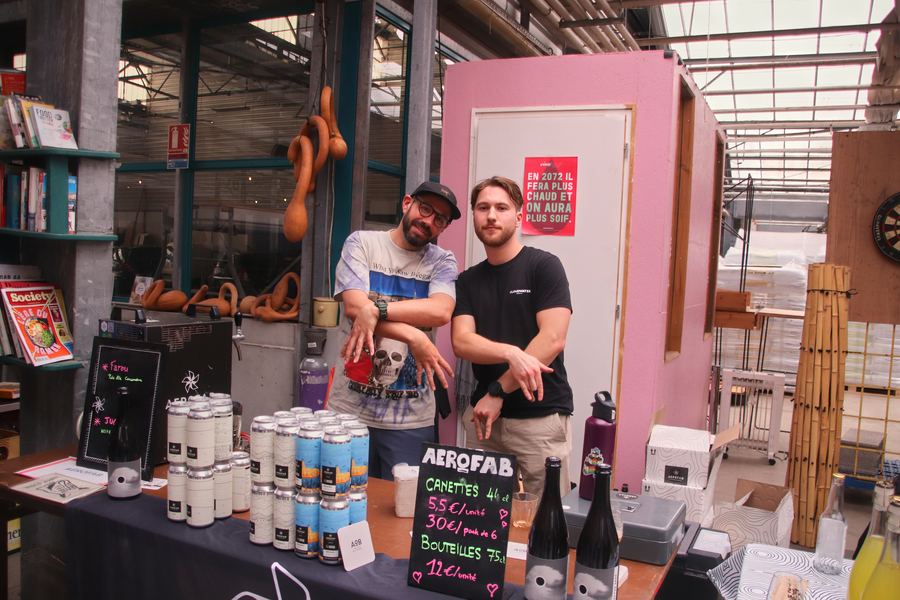
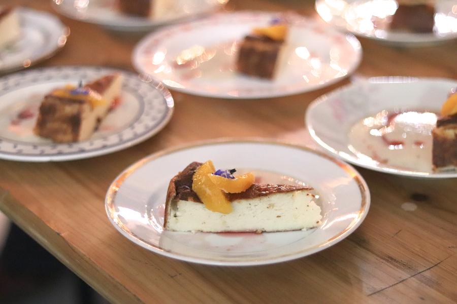
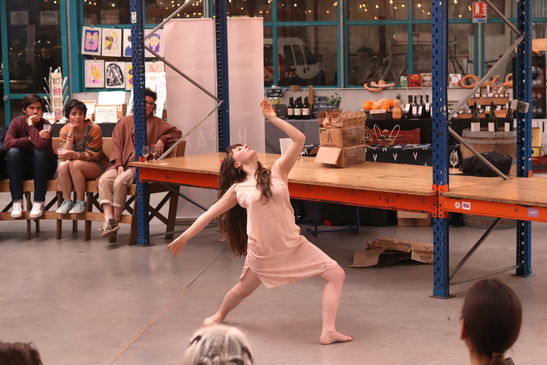
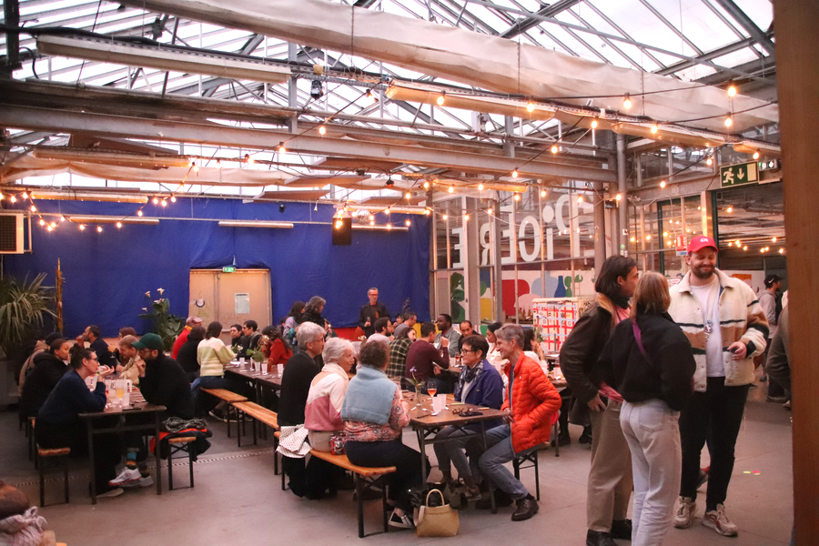

Deux jours pour goûter, apprendre et rencontrer celles et ceux qui fermentent au quotidien.
Une trentaine de stands au marché de producteur·ices : pain, fromage, kimchi, miso, légumes fermentés, kombucha, vins natures, bières… Des ateliers pour apprendre à fermenter soi-même (ginger beer, miso, sauce piquante, kéfir…). Des mini-conférences et démonstrations proposées par des fermenteur·euses passionné·es.
Le samedi soir, place au banquet fermenté avec Adélie Delajot, Annie Mach et Gaëlle Valin.
Et cette année, nouveauté : un vrai programme kids dès 5 ans.


Le marché de producteur·ices revient avec une trentaine de stands : pain, fromage, miso, kimchi, légumes fermentés et boissons.

Que serait UMAMI, la fête de la fermentation, sans ses ateliers autour de l'alimentation vivante et des boissons pétillantes ?

Le vivant une fabuleuse source d'inspiration et de réflexion. Venez écouter et échanger avec des fermenteur.euses passionné.e.s.

Cerise sur le gâteau et nouveauté pour les plus petits, nous vous avons préparé une programmation spéciale pour nos petits bouts de choux. Dès 5 ans.
Une table au cœur du vivant.
Le samedi soir, quand le marché ferme ses portes, le festival change de registre avec une grande table commune et une soirée pensée de bout en bout.
Trois cheffes réunies autour de la fermentation pour composer un menu végétarien entrée-plat-dessert — kimchi, miso, garum, kéfir — où chaque assiette célèbre le vivant, sublimée par leur talent collectif.
Chaque cheffe signe un plat en solo puis s'unissent pour un dessert surprise créé à six mains.
Accord mets & boissons fermentées inclus, avec ou sans alcool.